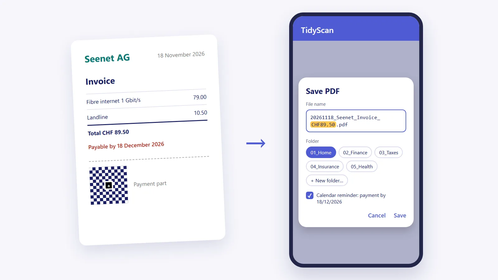
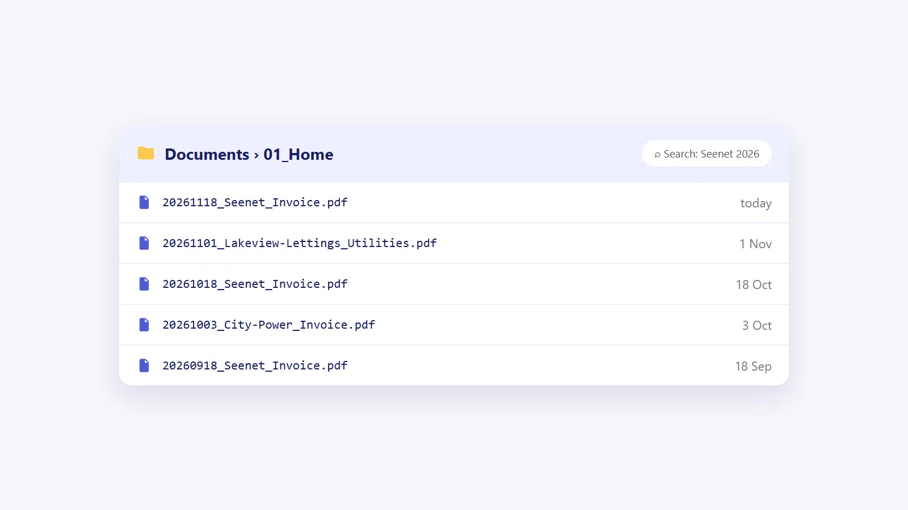

Scan invoices and file them so you can find every one
Updated 18 November 2026 · Silvan, founder of TidyScan · 6 min read
If you scan invoices, you want two things: get rid of the paper and find any invoice again in ten seconds. The scanning itself is the smallest part. What matters is what happens next: what the file is called, which folder it lands in and whether you keep an eye on the due date. Here is how to do it with your phone in five steps, with a method that still works years from now.
From a pile to an empty in-tray: how I do it
My invoices used to pile up. Whenever I needed one that I knew was lying around somewhere, the search took me through the whole flat.
Since I built TidyScan, I scan invoices the moment they arrive, and I file invoices that come by email straight away too, inbox-zero style. Out of sight, out of mind: no more mental clutter. Everything goes into my target folders on Google Drive. Once an invoice is filed and paid, I tear the paper up several times and throw it away.
Why the file name matters more than the folder
A scan usually comes out with a name like Scan_20261118_093512.pdf. After three months there are fifty of them, and you open one after the other.
A good file name answers the three questions you will search with later: When? From whom? What?
20261118_Seenet_Invoice.pdf
- Date first as YYYYMMDD: every folder sorts itself chronologically.
- Sender second: one search finds every invoice from that company.
- Type, and for Swiss QR bills the amount: you can tell what it is from the file list.
More on the scheme in the guide file naming convention.
Scan invoices and file them in 5 steps
- Scan the invoice. Put it on a dark surface and hold the phone straight above it. A scanner with edge detection crops and straightens the page. For invoices with several pages, put all pages into the same scan.
- Check the name. Add date, sender and type, or let the app do it. TidyScan reads the first page on the phone and suggests a name following the scheme above.
- Pick the folder. An invoice belongs where you would look for it: home, insurance, taxes. A proven layout is in the guide folder structure template.
- Add the due date. If the invoice says «payable by» or «within 30 days», put the date in your calendar right away. Then the invoice can disappear into its folder without being forgotten.
- Pay and get rid of the paper. Only throw the paper away once the scan is easy to read. Invoices with your address and customer number belong in the shredder or torn up in the bin, not whole in the paper recycling.

If you scan invoices this way, each one takes less than a minute, and your in-tray stays empty.
TidyScan is coming to Google Play soon.
Swiss QR bills: amount and due date for free
Invoices in Switzerland carry a QR code with the payee and amount. Nobody has to type those in: TidyScan reads the code and puts payee and amount into the file name. If the code includes a payment deadline, the app offers a calendar entry. Details in the guide Swiss QR bill.
File invoices from email the same way
Many invoices now arrive as PDFs by email. So they don't stay in your inbox, they belong in the same place as the scanned ones:
- Open the attachment in your email app.
- Tap «Share» and choose TidyScan.
- The app names the file with the same scheme and files it in the same folder.
The same works for e-invoices from your online banking, such as eBill in Switzerland: download the PDF and pass it to TidyScan via «Share» or «Open with». It is worth it, because e-banking does not keep paid e-invoices forever.
In the end you have one place for paper, email and e-invoices, not three. If you want to file invoices digitally, start right here: with everything that arrives from today.

How long should you keep invoices?
Rules of thumb for private individuals. Rules differ by country; for your own case, ask a professional.
Switzerland: private individuals generally have no legal duty to keep invoices. Still, it is worth keeping them as long as someone could make a claim based on them. The Swiss Code of Obligations has two limitation periods for this: 10 years for claims in general (Art. 127 CO) and 5 years among others for rent and other periodic payments, craftsmen's work, retail purchases and medical treatment (Art. 128 CO).
Germany: here too, private individuals generally have no duty to keep invoices. One exception: invoices for work on a house, flat or plot of land must be kept for two years (§ 14b UStG).
Don't rely on your bank to supply proof in an emergency: it can show the payment, but not the invoice behind it. Important contracts, certificates and anything you would really miss are best kept in the original as well. Ordinary invoices and receipts can be kept digitally.
Conclusion: scan invoices as soon as they arrive
To scan invoices takes seconds. The difference is the routine afterwards: a fixed file name with date, sender and type, a clear folder, the due date in the calendar. If you scan receipts and file email invoices the same way, after a few weeks you have an archive where every invoice is found in seconds. More ideas for getting started are in the guide paperless home office, and every TidyScan feature is on the home page.
Sources
- Switzerland: Code of Obligations, Art. 127 and 128 (wording retrieved 18 Nov 2026)
- Germany: VAT Act (UStG), § 14b (retrieved 18 Nov 2026)
Frequent questions
Is a photo enough, or do I need a scanner to scan invoices?
A phone is enough. A scanner app finds the edges, straightens the page and saves a PDF. That is easier to read than a normal photo and keeps several pages in one file.
PDF or JPG?
PDF. It keeps several pages together and opens the same on every device.
Do my invoices have to be stored in the cloud?
No. TidyScan saves to a folder of your choice: on the phone, in Google Drive or in another storage app. TidyScan has no cloud of its own.
Can I scan receipts too?
Yes. You scan receipts exactly like invoices. Thermal paper fades over time, so scanning is especially worth it for warranty receipts.